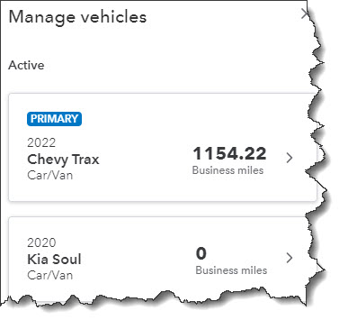
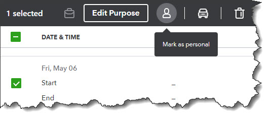
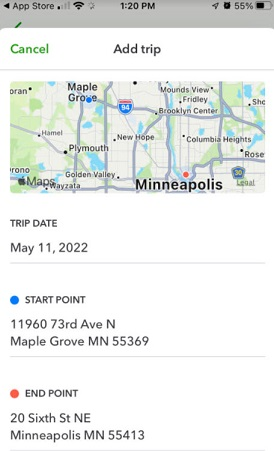

With gas prices so high, you need to track your travel costs as closely as possible. Consider getting a tax deduction for your business mileage.
If you drive even a little for business, it’s easy to let mileage costs slide. After all, it’s a pain to keep track of your tax-deductible mileage in a little notebook and do all the calculations required. If you do rack up a lot of business miles, you probably forget to track some trips and end up losing money.
QuickBooks Online offers a much better way. Its Mileage tools include simple fill-in-the-blank records that allow you to document individual trips. You can either enter the starting point and destination and let the site calculate your mileage and deduction or enter the number of miles yourself.
If you use QuickBooks Online’s mobile app, it can track your miles automatically as you drive (as long as you have the correct settings turned on). Here’s a look at how all of this works.
To get started, click the Mileage link in QuickBooks Online’s toolbar. The screen that opens will eventually display a table that contains information about your trips, but you need to do a little setup first. Click the down arrow next to Add Trip in the upper right corner and select Manage vehicles. A panel will slide out from the right. Click Add vehicle.
You’ll need to supply information about your vehicles before you can start entering trips.
You’ll need to supply the vehicle’s year, make, and model. Do you own or lease it, and on what date was the vehicle purchased or leased and put into service? Do you want to have your annual mileage calculated by entering odometer readings or have QuickBooks Online track your business miles driven automatically? When you’re done making your selections and entering data, click Save.
You can download trips as CSV files or import them from Mile IQ, but you’re probably more likely to enter them manually. Click Add Trip in the upper right corner. In the pane that opens, you’ll enter the date of the trip and either the total miles or start and end point. You’ll select the business purpose and vehicle and indicate whether it was a round trip. When you’re done, click Save. The trip will appear in the table on the opening screen, and your current possible total deduction will be in the upper left corner, along with your total business miles and total miles.
If you want to designate a trip as personal, click the box in front of the trip in that table. In the black horizontal box that appears, click the icon that looks like a little person, then click Apply. Now, the trip will appear in the Personal column and will not count toward your business tax-deductible mileage.
When you select a trip in the Mileage table, you can mark it as personal so it’s not included in your business tax-deductible miles.
If you use your vehicle(s) for personal as well as business purposes, tracking some of those miles can also mean a tax deduction. For tax year 2022, you can deduct 18 cents per mile for your travel to and from medical appointments. Note: Medical mileage is only deductible if medical exceeds a certain percent of AGI. Be sure to check with the IRS yearly tax code, as they update the mileage amounts annually.
And if you do volunteer work for a qualified charitable organization, the miles you drive in service of it can be deducted at the rate of 14 cents per mile. You can also claim the cost of parking and tolls, as long as you weren’t reimbursed for any of these expenses. Obviously, the IRS wants you to keep careful records of your charitable mileage, and QuickBooks Online can provide them.
QuickBooks Online doesn’t track these deductions, but you’ll at least have a record of the miles driven.
The easiest way to track your mileage in QuickBooks Online is by using its mobile app. You can launch this and have it record your mileage automatically as you’re driving. Versions are available for both Android and iOS, and they’re different from each other. They also have more features than the browser-based version of QuickBooks Online, like maps, rules, and easier designation of trips as business or personal.
The iOS version of Mileage in the QuickBooks Online app
In both versions, you’ll need to click the menu in the lower right corner after you’ve opened the QuickBooks Online app and select Mileage. Make sure Auto-Tracking is turned on. Your phone’s location services tool must be turned on, too. There are other settings that vary between the two operating systems. You can search the help system of either app to make sure you get your settings correct if the onscreen instructions aren’t clear enough.
Of course, you won’t see the fruits of your mileage deductions until you file your 2022 taxes. But you can factor these savings in as you’re doing your tax planning during the year. Please let us help if you’re having any trouble with QuickBooks Online’s Mileage tools, or if you have questions with other elements of the site.